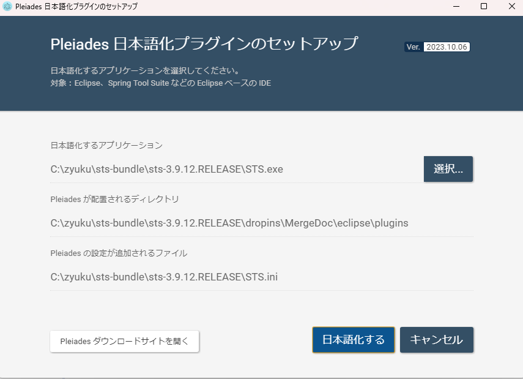
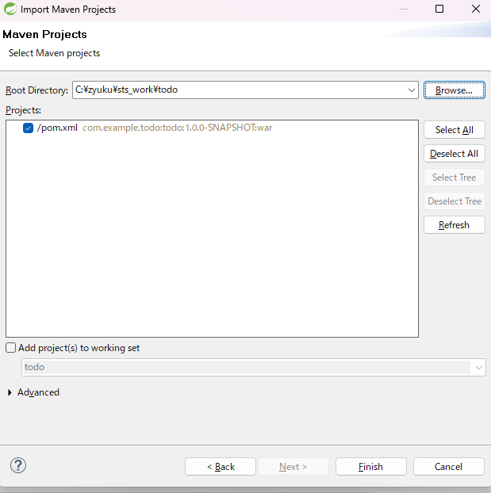
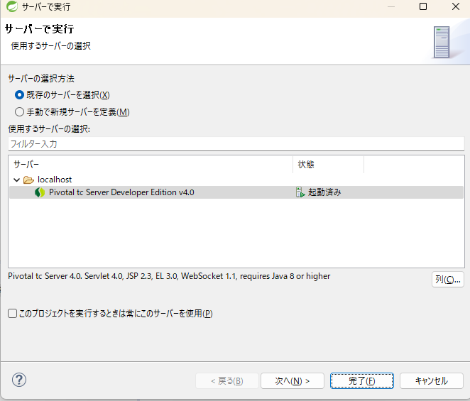

TERASOLUNAチュートリアル¶
以下チュートリアルについての情報を記す。
http://terasolunaorg.github.io/guideline/5.7.0.RELEASE/ja/Tutorial/TutorialTodo.html
環境構築¶
Spring Tool Suite(STS)¶
1,インストール
IDEとして「Spring Tool Suite」をインストールする。
公式サイトからzipファイルをダウンロードし、任意のフォルダに解凍する。
今回は「C:\zyuku」配下とする。
※Windows標準機能での解凍では非常に時間がかかった。2時間くらい。Lhaplusを利用すると１分ほど。。。
解凍後のパスが長すぎてエラーとなった。LhaplusでCドライブ直下に解凍するとエラーなく解凍できた。
今回は解凍後に上記パスへと移動させた。
2,起動
「C:\zyuku\sts-bundle\sts-3.9.18.RELEASE」配下の「STS.exe」を起動する。
起動時にWorkspaceを求められる。とりあえず今回は「C:\zyuku\sts_work」とする。
3.日本語化(必要に応じて)
以下の日本語化サイトの「Pleiades プラグイン・ダウンロード」からファイルをダウンロードし、解凍後に「setup.exe」を実行し上記「STS.exe」を選択する。
http://mergedoc.osdn.jp/

Apache Maven¶
1,インストール
Build Toolとして「Apache Maven」をインストールする。
公式サイトからバイナリのzipファイルをダウンロードし、任意のフォルダに解凍する。
今回は「C:\zyuku」配下とする。
2,環境変数
以下フォルダに解凍した場合は
「C:\zyuku」
以下を環境変数に追加する。
C:\zyuku\apache-maven-3.9.5-bin\apache-maven-3.9.5\bin
コマンドプロンプトを開き、以下コマンドを実行し、パスが通っていることを確認する。
mvn -version
環境変数「JAVA_HOME」が設定されていない場合はエラーとなるため注意すること。
パスはbinまで通す必要はなく、今回は「C:\Program Files\Java\jdk-21」とする。
プロジェクト作成¶
1.O/R Mapperに依存しないブランクプロジェクトの作成 コマンドプロンプト(今回は誤ってanaconda prompt)より以下を実行する。結果はかなり長いため割愛する。
cd C:\zyuku\test
mvn archetype:generate -B^
-DarchetypeGroupId=org.terasoluna.gfw.blank^
-DarchetypeArtifactId=terasoluna-gfw-web-blank-archetype^
-DarchetypeVersion=5.7.0.RELEASE^
-DgroupId=com.example.todo^
-DartifactId=todo^
-Dversion=1.0.0-SNAPSHOT
2.プロジェクトのインポート STSのメニューから、[File] -> [Import] -> [Maven] -> [Existing Maven Projects] -> [Next]を選択し、archetypeで作成したプロジェクトを選択する。 
プロジェクトを作成したフォルダの「todo」を選択し、FINISHをクリックする。以下のような結果となる。
※今回なぜか初回はうまくいかなかったのでファイルを全て削除してプロジェクト作成からやり直したらうまくインポートされた。

3.プロジェクトの実行
プロジェクトを右クリックして「実行」->「サーバで実行」を選択する。
APサーバー(Pivotal tc Server Developer Edition v4.0)を選択し、「Next」をクリックする。

todoが「Configured」に含まれていることを確認して「Finish」をクリックしてサーバーを起動する。
今回は以下のようなエラーが出力した。これはJava8からPermanent領域が無くなったことによるオプションエラーです。
unrecognized vm option 'maxpermsize=256m'
プロジェクトを右クリックして「実行」->「実行の構成」を選択する。
引数タブのVM引数内の「-XX:maxpermsize=256m」を削除する。